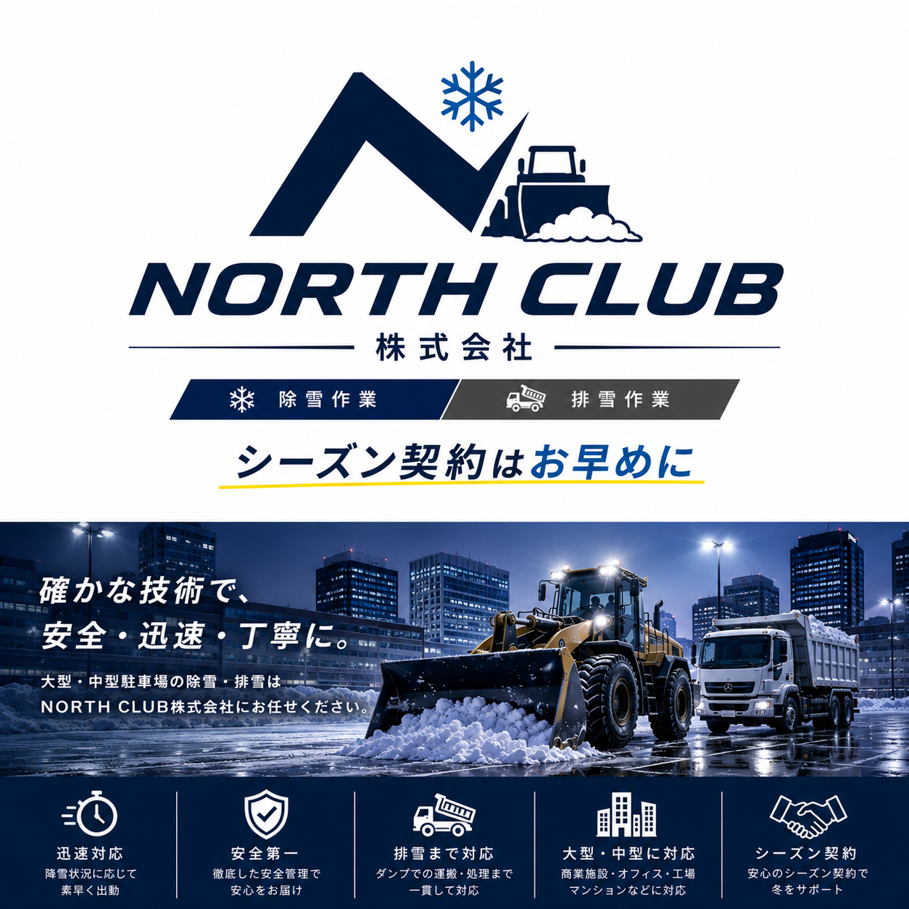

シーズン定期除雪
12月から3月を中心に、積雪基準に応じて出動。毎回の発注連絡を減らし、営業前の駐車場確保を優先します。

6月・7月の早期相談を推奨。 除雪車両と作業員の枠に限りがあるため、11月の初雪前に出動条件まで決めておくと安心です。
Hokkaido Needs
NORTH CLUB株式会社は、札幌支店・恵庭支店を拠点に地域の除雪を行っています。 札幌圏では、深夜から早朝の降雪で駐車場が使えないと、開店遅れ、来客導線の混乱、 従業員の雪かき負担や安全管理上の心配につながります。中規模スーパー・企業駐車場では、 現地の広さや営業時間に合わせた、きめ細かなシーズン契約が効果を発揮します。
Before Winter
Our Support
12月から3月を中心に、積雪基準に応じて出動。毎回の発注連絡を減らし、営業前の駐車場確保を優先します。
敷地内に寄せた雪を放置せず、雪山が大きくなる前に排雪を計画。駐車台数の減少を抑えます。
入口、歩道、搬入口、狭い通路など、大型車両が入りにくい箇所も手押し機で安全導線を整えます。
Equipment
大型の駐車場から、重機が入りにくい住宅地・狭い通路まで対応できるよう、複数の除雪機材を使い分けます。

広い駐車場や敷地の除雪に対応。スーパー、会社、工場、倉庫などの面積がある現場向けです。

大型機が入りづらい場所や、人の手では時間がかかる場所に対応。細かい現場にも小回りを利かせます。

坂道や階段まわりなど、特殊な地形にも対応可能。手押し作業と組み合わせて仕上げます。
Target
スーパー、ドラッグストア、クリニック、介護施設、事務所、工場、倉庫の駐車場に対応。複数店舗の一括相談も可能です。
Price Guide
駐車台数、雪置き場、排雪の有無、作業時間帯、出動基準により変動します。
20万-80万円 / シーズン
開店前除雪、入口・歩道仕上げ、必要に応じた排雪を組み合わせます。
11万-50万円 / シーズン
出勤前に使いやすい状態を整えることを重視。シーズン契約と相性が良いプランです。
1.5万-5万円 / 回
契約前のご相談や、大雪時の追加対応をご希望の方に。
4t 8,000円台- / 台
雪置き場が少ない店舗、駐車台数を落としたくない施設に。
Season Booking
6月から7月に現地調査と見積り、8月から10月に契約枠を確定、11月の初雪前に出動基準・優先順位・連絡先・雪置き場を確認。降雪時に慌てないよう、冬前に管理体制を整えます。
Free Estimate
会社名、住所、駐車台数、希望時間、排雪の有無を送ってください。中規模スーパー・企業駐車場は、初回の現地確認からシーズン契約までスムーズに進めます。
Company
札幌市周辺の除雪予約を受付中。電話受付時間は10:00-19:00です。